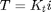
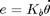
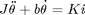
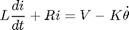
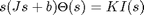
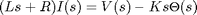
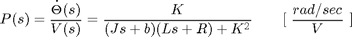
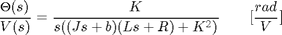
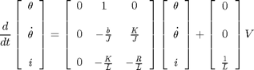
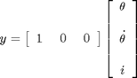

DC Motor Position: System Modeling
Key MATLAB commands used in this tutorial are: tf , ss
Contents
Physical setup
A common actuator in control systems is the DC motor. It directly provides rotary motion and, coupled with wheels or drums and cables, can provide translational motion. The electric equivalent circuit of the armature and the free-body diagram of the rotor are shown in the following figure.

For this example, we will assume the following values for the physical parameters. These values were derived by experiment from an actual motor in Carnegie Mellon's undergraduate controls lab.
(J) moment of inertia of the rotor 3.2284E-6 kg.m^2
(b) motor viscous friction constant 3.5077E-6 N.m.s
(Kb) electromotive force constant 0.0274 V/rad/sec
(Kt) motor torque constant 0.0274 N.m/Amp
(R) electric resistance 4 Ohm
(L) electric inductance 2.75E-6H
In this example, we assume that the input of the system is the voltage source (V) applied to the motor's armature, while the output is the position of the shaft (theta). The rotor and shaft are assumed to be rigid. We further assume a viscous friction model, that is, the friction torque is proportional to shaft angular velocity.
System equations
In general, the torque generated by a DC motor is proportional to the armature current and the strength of the magnetic field. In this example we will assume that the magnetic field is constant and, therefore, that the motor torque is proportional to only the armature current i by a constant factor Kt as shown in the equation below. This is referred to as an armature-controlled motor.
(1)
The back emf, e, is proportional to the angular velocity of the shaft by a constant factor Kb.
(2)
In SI units, the motor torque and back emf constants are equal, that is, Kt = Ke; therefore, we will use K to represent both the motor torque constant and the back emf constant.
From the figure above, we can derive the following governing equations based on Newton's 2nd law and Kirchhoff's voltage law.
(3)
(4)
1. Transfer Function
Applying the Laplace transform, the above modeling equations can be expressed in terms of the Laplace variable s.
(5)
(6)
We arrive at the following open-loop transfer function by eliminating I(s) between the two above equations, where the rotational speed is considered the output and the armature voltage is considered the input.
(7)
However, during this example we will be looking at the position as the output. We can obtain the position by integrating the speed, therefore, we just need to divide the above transfer function by s.
(8)
2. State-Space
The differential equations from above can also be expressed in state-space form by choosing the motor position, motor speed and armature current as the state variables. Again the armature voltage is treated as the input and the rotational position is chosen as the output.
(9)
(10)
Design requirements
We will want to be able to position the motor very precisely, thus the steady-state error of the motor position should be zero when given a commanded position. We will also want the steady-state error due to a constant disturbance to be zero as well. The other performance requirement is that the motor reaches its final position very quickly without excessive overshoot. In this case, we want the system to have a settling time of 40 ms and an overshoot smaller than 16%.
If we simulate the reference input by a unit step input, then the motor position output should have:
- Settling time less than 40 milliseconds
- Overshoot less than 16%
- No steady-state error, even in the presence of a step disturbance input
MATLAB representation
1. Transfer Function
We can represent the above open-loop transfer function of the motor in MATLAB by defining the parameters and transfer function as follows. Running this code in the command window produces the output shown below.
J = 3.2284E-6;
b = 3.5077E-6;
K = 0.0274;
R = 4;
L = 2.75E-6;
s = tf('s');
P_motor = K/(s*((J*s+b)*(L*s+R)+K^2))
P_motor =
0.0274
-------------------------------------------
8.878e-12 s^3 + 1.291e-05 s^2 + 0.0007648 s
Continuous-time transfer function.
2. State Space
We can also represent the system using the state-space equations. The following additional MATLAB commands create a state-space model of the motor and produce the output shown below when run in the MATLAB command window.
A = [0 1 0
0 -b/J K/J
0 -K/L -R/L];
B = [0 ; 0 ; 1/L];
C = [1 0 0];
D = [0];
motor_ss = ss(A,B,C,D)
motor_ss =
a =
x1 x2 x3
x1 0 1 0
x2 0 -1.087 8487
x3 0 -9964 -1.455e+06
b =
u1
x1 0
x2 0
x3 3.636e+05
c =
x1 x2 x3
y1 1 0 0
d =
u1
y1 0
Continuous-time state-space model.
The above state-space model can also be generated by converting your existing transfer function model into state-space form. This is again accomplished with the ss command as shown below.
motor_ss = ss(P_motor);